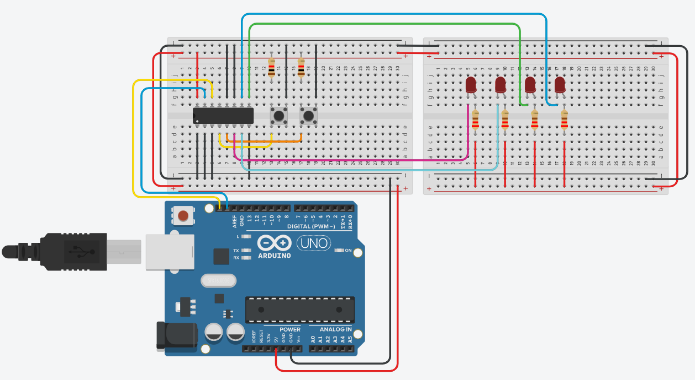
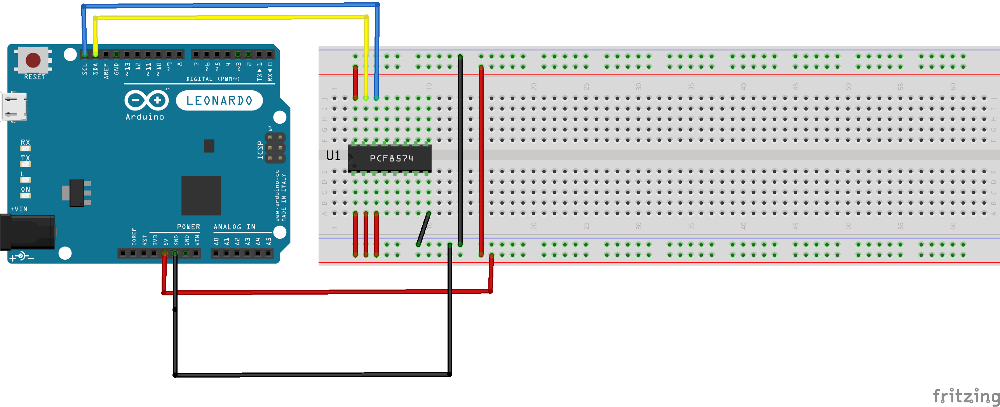

Maak een schakeling met een PCF8574AN I/O-expander en twee drukknoppen. De ene knop toont een linkslopende volloper op de uitgangen, de andere een rechtslopende. Je leest en schrijft dus allebei via dezelfde chip.
Bepaal eerst welk adres je moet gebruiken om de PCF8574AN aan te sturen, en voeg daarna gaandeweg componenten en logica toe.
Een volloper is een lichteffect waarbij eerst de uiterst linkse led gaat branden, daarna de twee uiterst linkse leds, daarna de drie uiterst linkse enzovoort, tot alle leds branden. Daarna gaan alle leds uit en begint alles opnieuw. In dit voorbeeld gebruiken we 4 leds.

De leds zijn actief laag geschakeld: een 0 op de uitgang doet de led branden. Een uitgang van de PCF8574 kan namelijk maar zo'n 4 mA leveren, te weinig voor een led, maar hij kan er wel veel meer opnemen.
Merk op dat de lege I/O-pinnen op het schema verbonden zijn met ground. Op die manier ligt hun toestand vast. Zou je later de /INT gebruiken, dan kan dat een rol spelen.
Plaats best een weerstand tussen GND en P6 en tussen GND en P7. Stuur je dan per ongeluk een verkeerd bitpatroon uit, dan maak je geen kortsluiting.
Ga er altijd van uit dat een gebruiker domme dingen gaat doen. Dat betekent dat hij bijvoorbeeld ook beide knoppen tegelijk kan indrukken. In dat geval moeten alle leds gedoofd blijven.
Bekijk eens deze voorbeeldcode. Ze leest de knoppen en zet meteen een vast patroon op de leds, zodat je kan zien of je bedrading klopt.
#include <Wire.h>
const int adresExpander = 0x38;
void setup()
{
Wire.begin();
Serial.begin(9600);
}
void loop()
{
Wire.requestFrom(adresExpander, 1);
byte waarde = 0;
if (Wire.available())
{
waarde = Wire.read();
bool knop1 = waarde & B00000001;
bool knop2 = waarde & B00000010;
if (knop1 == false) // pull-up: ingedrukt is 0
{
Serial.println("Knop 1 ingedrukt");
Wire.beginTransmission(adresExpander);
Wire.write(B00011011); // zie de tabel hieronder
Wire.endTransmission();
}
else if (knop2 == false) // pull-up: ingedrukt is 0
{
Serial.println("Knop 2 ingedrukt");
Wire.beginTransmission(adresExpander);
Wire.write(B00100111);
Wire.endTransmission();
}
else
{
Wire.beginTransmission(adresExpander);
Wire.write(B00111111);
Wire.endTransmission();
}
}
}Om het bitpatroon te begrijpen dat we uitsturen, is het makkelijkst om een tabel te maken. Hieronder staat B00011011 uitgeschreven. Werkt het maskeren en het opbouwen van zo'n patroon nog niet vlot, kijk dan eerst op Werken met bits.
| P7 | P6 | P5 | P4 | P3 | P2 | P1 | P0 |
|---|---|---|---|---|---|---|---|
| Naar GND | Naar GND | Led 4 | Led 3 | Led 2 | Led 1 | Drukknop 2 | Drukknop 1 |
| 0 | 0 | 0 | 1 | 1 | 0 | 1 | 1 |
| * | * | led aan | led uit | led uit | led aan | ** | ** |
P6 en P7 hangen aan de massa, dus daar hoort een 0 te staan. Zet je er een 1, dan probeert de uitgang de pin hoog te trekken terwijl hij aan GND vasthangt.
Die zet je altijd op 1, zodat je de uitgelezen toestand van de schakelaar niet beïnvloedt. Zet je ze op 0, dan simuleer je een ingedrukte knop en lees je je eigen uitgang terug.
Voor je aan de knoppen begint, is het handig om de volloper zelf al eens werkend te krijgen. Hieronder staan twee versies van diezelfde volloper: de ene zoals je ze snel neerschrijft, de andere zoals ze er beter uitziet.
Versie 1 hieronder is een oplossing zoals een student ze graag indient. Ze doet wat ze moet doen, maar het is geen mooi programma, aangezien er alleen maar sequentieel gewerkt wordt. We vertrekken ervan om aan te tonen hoe het veel beter kan.

In bovenstaand schema is de PCF8574 geconfigureerd op adres 0x3F, want de drie adreslijnen staan alle drie hoog. De leds zijn niet mee getekend om de tekening niet te overladen. Hangt jouw chip met A0 tot A2 aan GND, dan is jouw adres 0x38.
Versie 1: de negen stappen één voor één uitgeschreven.
#include <Wire.h>
const int adresExpander = 0x3F;
void setup()
{
Wire.begin();
}
void loop()
{
Wire.beginTransmission(adresExpander);
Wire.write(0xFF);
Wire.endTransmission();
delay(500);
Wire.beginTransmission(adresExpander);
Wire.write(0x7F);
Wire.endTransmission();
delay(500);
Wire.beginTransmission(adresExpander);
Wire.write(0x3F);
Wire.endTransmission();
delay(500);
Wire.beginTransmission(adresExpander);
Wire.write(0x1F);
Wire.endTransmission();
delay(500);
Wire.beginTransmission(adresExpander);
Wire.write(0x0F);
Wire.endTransmission();
delay(500);
Wire.beginTransmission(adresExpander);
Wire.write(0x07);
Wire.endTransmission();
delay(500);
Wire.beginTransmission(adresExpander);
Wire.write(0x03);
Wire.endTransmission();
delay(500);
Wire.beginTransmission(adresExpander);
Wire.write(0x01);
Wire.endTransmission();
delay(500);
Wire.beginTransmission(adresExpander);
Wire.write(0x00);
Wire.endTransmission();
delay(500);
}Hier zijn de leds in common anode geplaatst, dus een 0 doet de led branden en bij een 1 blijft ze gedoofd. Daarom telt het patroon van 0xFF (alles uit) naar 0x00 (alles aan).
Versie 2: je ziet in versie 1 steeds een herhaling van dezelfde 4 instructies:
Wire.beginTransmission(adresExpander);
Wire.write(0x00);
Wire.endTransmission();
delay(500);De enige factor die wijzigt, is de waarde die via Wire.write() geschreven wordt. Je kan de code drastisch inkorten door die vier instructies in een lus op te nemen. In totaal worden ze 9 maal herhaald, telkens met een andere waarde. Een simpele oplossing bestaat erin om die 9 waarden in een array te zetten en er een lus over te laten lopen.
#include <Wire.h>
const int adresExpander = 0x3F;
byte ledPatroon[] = {0xFF, 0x7F, 0x3F, 0x1F, 0x0F, 0x07, 0x03, 0x01, 0x00};
// Zo hoef je het aantal niet zelf te tellen, en klopt het ook nog
// als je later een patroon toevoegt of weglaat.
const int aantalPatronen = sizeof(ledPatroon) / sizeof(ledPatroon[0]);
void setup()
{
Wire.begin();
}
void loop()
{
for (int i = 0; i < aantalPatronen; i++)
{
Wire.beginTransmission(adresExpander);
Wire.write(ledPatroon[i]);
Wire.endTransmission();
delay(500);
}
}De array bevat 9 waarden, met indexen 0 tot en met 8. Schrijf je per ongeluk i < 10, dan leest de lus in de laatste doorloop een element dat er niet is. De compiler zegt daar niets over en je sketch loopt gewoon door, maar je stuurt dan een willekeurige byte naar je leds. Laat sizeof het aantal berekenen, dan kan je er niet naast zitten.
Dit is al een veel betere oplossing. Deze volloper gebruikt wel alle acht de uitgangen. In jouw schakeling hangen er maar vier leds, en moet je bovendien P0 en P1 hoog houden voor je knoppen.
Maak nu zelf de oefening verder af. Je kan de knoppen lezen, je weet welke bit bij welke led hoort, en je weet hoe je een sequentie omzet naar een lus.
De voorbeeldcode hierboven gebruikt else if, waardoor knop 1 wint als je allebei de knoppen tegelijk indrukt. Dat is wat volgens de opdracht niet mag gebeuren. Denk dus goed na over de volgorde van je voorwaarden.
Sla je oefening op.
Overloop volgende checklist om je oefening zelf te evalueren:
Welke knop welke richting geeft, hangt af van hoe jij je leds op je breadboard gelegd hebt. Deze oplossing gaat ervan uit dat led 1 aan P2 hangt en led 4 aan P5. Ziet het er bij jou omgekeerd uit, wissel dan de true en false om in de oproep van maakPatroon().
De kern is maakPatroon(). Die vertrekt van allesUit, het patroon waarin P0 en P1 hoog staan voor de knoppen en P6 en P7 laag voor de massa, en zet daarna één voor één de bits van de brandende leds op 0. Welke bits dat zijn, hangt af van de richting: opbouwend vanaf P2, of afbouwend vanaf P5.
De regel patroon &= ~(1 << bitNummer) is de standaardmanier om precies één bit op 0 te zetten en de zeven andere te laten staan. Ze staat stap voor stap uitgelegd op Werken met bits.
De loop() gebruikt millis() in plaats van delay() voor het doorschuiven. Zou je hier delay(300) zetten, dan leest je programma de knoppen 300 ms lang niet en voelt het traag aan wanneer je van richting wisselt of allebei de knoppen loslaat.
knop1 == knop2 vangt in één test twee gevallen op: geen enkele knop ingedrukt, en allebei tegelijk. In beide gevallen doven we alles en zetten we de teller terug op nul.
#include <Wire.h>
const int adresExpander = 0x38; // PCF8574AN met A0, A1 en A2 aan GND
const int aantalLeds = 4;
const int eersteLedBit = 2; // LED1 hangt aan P2, LED4 aan P5
// P0 en P1 blijven hoog, anders lees je je eigen knoppen als ingedrukt.
// P6 en P7 blijven laag, want die hangen aan GND.
// De vier LEDs zijn actief laag, dus een 1 betekent hier: LED uit.
const byte allesUit = B00111111;
const unsigned long stapTijd = 300;
const unsigned long ontdenderTijd = 50;
unsigned long vorigeStap = 0;
int stap = 0;
void schrijfExpander(byte waarde)
{
Wire.beginTransmission(adresExpander);
Wire.write(waarde);
Wire.endTransmission();
}
byte leesExpander()
{
Wire.requestFrom(adresExpander, 1);
if (Wire.available())
{
return Wire.read();
}
return 0xFF; // niets ontvangen: doe alsof geen enkele knop ingedrukt is
}
// Bouwt het patroon voor "aantal" brandende LEDs, opgebouwd vanaf LED1
// (rechtslopend) of vanaf LED4 (linkslopend).
byte maakPatroon(int aantal, bool vanafLed1)
{
byte patroon = allesUit;
for (int i = 0; i < aantal; i++)
{
int bitNummer = vanafLed1 ? eersteLedBit + i : eersteLedBit + aantalLeds - 1 - i;
patroon &= ~(1 << bitNummer); // een 0 doet de LED branden
}
return patroon;
}
void setup()
{
Wire.begin();
// De knoppinnen moeten hoog staan voor we ze kunnen uitlezen
schrijfExpander(allesUit);
}
void loop()
{
byte waarde = leesExpander();
bool knop1 = (waarde & B00000001) == 0;
bool knop2 = (waarde & B00000010) == 0;
// Geen enkele knop, of allebei tegelijk: alles blijft gedoofd
if (knop1 == knop2)
{
stap = 0;
schrijfExpander(allesUit);
delay(ontdenderTijd);
return;
}
if (millis() - vorigeStap >= stapTijd)
{
vorigeStap = millis();
schrijfExpander(maakPatroon(stap, knop1));
stap = (stap + 1) % (aantalLeds + 1); // na alle 4 volgt een lege stap
}
delay(ontdenderTijd);
}